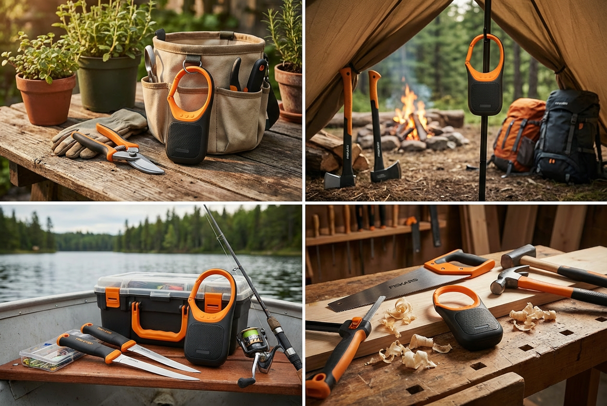

Construída com o mesmo polímero resistente dos nossos machados. Suporta água, lama, quedas de 3 metros e o caos do estaleiro de obra. Não é um brinquedo de praia. É a sua nova ferramenta de trabalho.

Totalmente imune a pó de cimento, serradura e submersão em água até 1 metro durante 30 minutos. Lave-a no fim do dia de trabalho.
Bateria de iões de lítio de alta densidade garante som durante dois turnos seguidos. Inclui porta USB-C reversível para carregar o seu telemóvel.
Drivers de neodímio otimizados para cortar o ruído de motosserras e rebarbadoras. Som nítido a 360 graus, mesmo no meio do estaleiro.